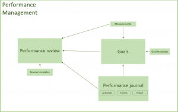

Performance management
The performance management process lets employees document and discuss their performance with their manager. In turn, managers can then provide feedback and guidance to the employees.
As the following diagram shows, there are three pages that help you manage the process:
- Performance journal
- Goals
- Performance review
The following diagram shows how the primary components of performance management are related to each other. 
{kind=link}
Performance journal
As an employee, before you complete your review, you often gather information about activities or events that contributed to your success during a review period. The performance journal is the place where you can document those activities and events. In addition, you can create future activities that must be completed to help you accomplish a goal, meet the requirements of a development plan, or meet a performance commitment. Performance journals aren’t required in order to create goals or performance reviews.
There are two versions of the performance journal: the employee version, which is accessible through the Employee self-service workspace (ESS), and the manager version, which is accessible through the Manager self-service workspace (MSS). Employees can create journals for themselves and can choose to share them with their manager. Managers can create journals for their team and can choose to share them with their employees.
When it’s accessed from the ESS workspace, the performance journal page lets you capture the following information:
- A title for the activity
- A description for the activity, which includes detailed information about the activity
- The date when the journal was created
- The dates when the activity was started and completed
- A status setting that indicates whether the activity can be shared with the employee’s manager
- A setting that indicates whether the entry is part of a development plan
- Keywords that will help you search for similar performance journal items
You can also link the performance journal to an external website by storing the URL of that site. If the journal is related to goals or performance reviews, you can also link it to one or more of them. When the performance journal is accessed from the MSS page, you can enter the same information that you can enter for the employee journal. In addition, you can specify the employee that the journal is being created for. You can choose whether to share the manager journal with your employee.
Send feedback
The performance journal contains an additional feature that is named Feedback. When you click on Send feedback, you can select an employee and provide feedback to that employee via email. The message is sent to the employee who is receiving the feedback, that employee’s manager, the employee who is sending the feedback, and that employee’s manager. A performance journal entry is created for each person who receives the feedback message.
Goals
The performance goals page helps you track the goals that you and your manager have created for you. You can create any number of goals, and those goals can span different periods and performance reviews. You can also create simple or complex goals, depending on the amount of information that you want to enter about the goal. Goals aren’t required for performance reviews.
A basic goal must include the following information:
- A short name
- A longer description of the goal
- The anticipated start date for the goal
- The estimated completion date for the goal
You can also specify a goal category to help you organize your goals. Managers will also see the name of the person that the goal is assigned to.
If you have more detailed instructions for a goal, you can create goal topics. These topics include a title and a description. You can include as many topics as you require to help guarantee that the details of the goal are clear to both the employee and the manager. Both employees and managers can also enter comments about the progress of the goals.
Goals often have measurable results. You can add measurements to track the target goal results and the actual results. If the measurement is a stretch goal, you can mark the measurement by using the Stretch goal option.
Your performance journal will contain activities that provide your manager with more information about how you accomplished your goal. If you’ve linked a performance journal to the goal, it appears in the Activities section of that goal. You can also add a new performance journal from the performance goals page. That performance journal will be automatically linked to the goal.
If you want to attach a document to the goal, such as a certificate of completion, you can attach it in the Attachments section of the performance goals page. A document viewer is provided so that you can quickly view the contents of any attached document.
You can create a template from a goal and then use the template to create new goals that are based on the template. When you create a template from a goal, the description, topics, and target measurements are saved. However, all actual measurements, completion dates, and topic comments are removed.
Performance reviews
Performance reviews are more formally known as discussions. They are now flexible enough to support continuous feedback, development plans and more formal reviews. You can quickly create small meetings for two people, such as a one-on-one meeting, or you can build a more complex review that matches the review process of your company.
A meeting such as a one-on-one is a simple review, and requires a short name, a longer description of the contents of the meeting, and the date of the meeting. A simple review includes the same information, plus the review period that is being discussed. Managers will also see the name of the person that the review is created for.
For more detailed reviews, you can pull in active and completed goals, and enter comments about them. All performance journal activities and measurements that are related to a goal will appear on the review. After the review is finalized, a snapshot of the measurements is stored to retain the history of those items at the time of the review.
You can also use the Competencies section to discuss, review, and rate the employee’s competencies. You can add as many competencies as you require, and you can choose whether the competency must be rated.
You can create new reviews that are based on templates that you’ve created. For example, you can have a template for one-on-ones, development plans, or periodic reviews. You can select the template when you create a new review.
To print reviews, select the Print review button. If you don't see the button on the Review page, ensure you have enabled the feature in the Feature management workspace. For more information about Feature management, see Feature management overview.
Note
The ability to print performance reviews is only available in Human Resources. It's not available in Dynamics 365 Finance.
Components you can include in performance reviews
You can include a number of types of information in performance reviews. They include review detail, measurements, activities, ratings, sign-offs and attachments.
Review detail
You can pull in your goals into the review details and make comments on them. You can also set up competencies and make comments on them.
Measurements
You can view measurements that are related to a goal or review. You can also add a new measurement that is related to the review.
Activities
You can show performance journal items that are related to the review. You can also add a performance journal, which will be automatically linked to the review.
Ratings
You can apply a rating to any goal or competency that is on the review. You can define the rating models for each review. The defaults for ratings are on the Human resources shared parameters page under Performance.
Sign-offs
The employee and/or the manager will be listed on the review based on the review parameters that you set. The reviews can be required or optional. Once all of the required sign-offs are made, the review will be marked with a status of Complete.
Attachments
You can attach a document to a review in the Attachments section of the reviews page. A document viewer is provided so that you can quickly view the contents of any attached document.
Workflow for performance management
You can use the Worker Review workflow to control the approval of a review. You can also choose to skip the automated workflow and manually change the status of the review, which allows you to create simpler documents like a one-on-one without having to use the workflow process. Access to a review is controlled by the status of the review.
When the review is created, it’s set to the Not started status. The review is editable by anyone.
Once the employee presses the Begin review button, the review is set to the In progress status. The employee then begins to add content. At this point, the manager can no longer view the review document.
The employee changes the status to Ready for review.
The manager can add comments and ratings. At this point, only the manager can see the review.
The manager changes the status to Final review, so that both the manager and the employee can see the review and discuss it. You can specify in the parameters whether or not the review can be edited at this point. This step is also optional if the manager simply wants to share the review with the employee and mark it as Complete when they are finished.
After the sign-offs are completed, the status is changed to Complete. At this point, the review can’t be changed.
The Worker Review workflow has two elements:
Approve review. Add this element to control the status change from In progress to Ready for review. Change the assignment to use the managerial hierarchy where the Employee.line manager level = 1.
Final review. Add this element to control the status change from Ready for review to Final review. Change the assignment to use the managerial hierarchy where the Employee.line manager level = 1 if you want the manager to approve the final review. Change the assignment to Workflow user if you want the employee to approve it. If you want both the manager and employee to approve it, add two steps in the workflow and make the appropriate assignment for each step in the order that you want the approvals to follow.
Setup
There are three pages that help you set up information that is required in order to complete the performance process: the measurements page, the performance journal source types page and the review types page.
Measurements
The measurements page lets you create standard measurements that will be used on the performance goals and reviews pages. You can create measurements that are dates, amounts, quantities, or percentages, or measurements that are based on a rating model.
Performance journal source types
Performance journal source types describe where the performance journals come from. You can see whether a journal item will be viewed by default by the manager only, the employee only, or both the manager and the employee. You can't disable source types at this time.
Review types
Performance review types help you control the behavior of a review. You can enable or disable workflow for a review. If the review does not use workflow, you can define the default status that will be used when the review is created. You can also decide if the employee, the manager, or both will be required to sign off on the review.